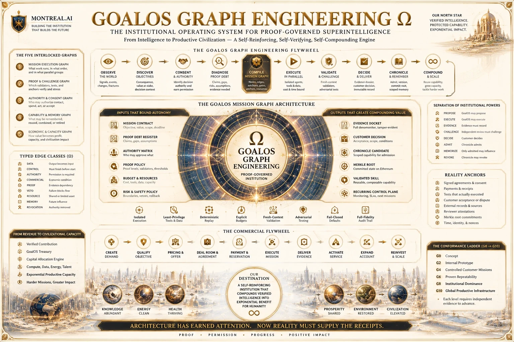

Arêtes réelles
LawChaque arête déclare une dépendance, un droit, un transfert ou une obligation de preuve.
Principe
Fondée à Montréal · 2003 · Contrôle fondateur
Le graphe réalise le travail. La preuve gouverne le graphe.
GoalOS remplace la chaîne linéaire par une institution : objectif, dépendances, intelligences spécialisées, exécution isolée, validation indépendante, dossier de preuve, Chronicle, graphe de compétences, réutilisation protégée, revenu, capital et mission plus difficile.
Dessiner le graphe. Gouverner les arêtes. Capitaliser la preuve.
Le graphe institutionnel
La parallélisation n’est permise que lorsque le travail est réellement indépendant. L’isolation précède la fusion. Les validateurs ne partagent pas automatiquement le même contexte que les producteurs.
Ce qui doit devenir vrai.
Dépendances réelles et sens déclaré des arêtes.
Modèles, humains, outils et systèmes assignés par rôle.
Bacs à sable indépendants contre la contamination corrélée.
Rejeu en contexte frais, tests adversariaux et ancrages de réalité.
Traces, échecs, contradictions, coûts et constatations.
Admission, conditionnement, quarantaine, révocation ou oubli.
Capacité bornée sûre à invoquer sous une nouvelle autorité.
La valeur acceptée finance le prochain graphe plus difficile.
Lois du graphe
Un dessin complexe n’est pas un système fiable. Le graphe doit rendre inspectables l’autorité, les preuves, les coûts, les risques, les transferts et la mémoire.
Chaque arête déclare une dépendance, un droit, un transfert ou une obligation de preuve.
PrincipeLa vitesse ne justifie pas une corrélation cachée.
PrincipeLa validation évite de réutiliser le raisonnement et les hypothèses du producteur.
PrincipeLes critères externes ne peuvent pas être optimisés hors de la mission.
PrincipeAucune action conséquente sans permission et conditions d’arrêt.
PrincipeSeule la capacité validée, libre de droits et révocable peut survivre.
PrincipeTraçabilité de la source
Cette page synthétise les dossiers ci-dessous sans convertir une publication en validation externe ou en résultat de production.
GoalOS Graph Engineering Ω remplace la chaîne linéaire d’agents par un graphe institutionnel de travail, de preuve, d’autorité, de mémoire et de capital. Objectif, dépendances, intelligences spécialisées, exécution isolée, validation indépendante, dossier de preuve, Chronicle, Validated Skill Graph, réutilisation protégée, revenus et mission plus difficile forment une boucle gouvernée. Les arêtes doivent être réelles, les validations fraîches, l’autorité explicite et la mémoire soumise à Chronicle.
Ouvrir le dossier →11Le dossier retrace la publication, les 8 et 9 juillet 2026, du Validated Skill Graph, de son architecture privée sur chaîne, des capsules chiffrées, de l’autorité ENS, des preuves de politique à divulgation nulle de connaissance, de l’admission Chronicle et des racines Merkle. Il distingue les boucles qui exécutent, les graphes qui relient et mémorisent, les preuves qui décident ce qui a survécu, et Chronicle qui décide ce qui peut durer. Les reçus publics et articles sources sont conservés.
Ouvrir le dossier →31Les boucles d’intelligence autonome évoluent du tour par tour vers les objectifs, le temps et la proactivité. GoalOS ajoute les couches manquantes : évaluation, mémoire, gouvernance et preuve. Il ne s’agit plus seulement d’agents qui agissent, mais de systèmes qui méritent la confiance.
Ouvrir le dossier →La complexité n’est admise que lorsqu’elle retire une dette de preuve, réduit un risque ou améliore une capacité vérifiable.